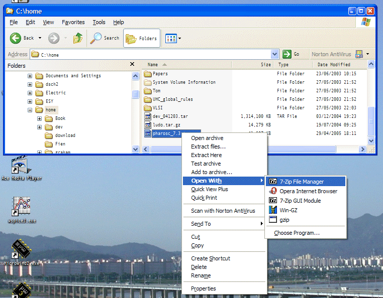

| vlsitechnology.org /Windows help /tar download | |
Download the TAR file | |
Linux help
Windows help
Linux Live CD
The library release is a gzipped tar file. Download the pharosc_8.4.tar.gz and pharosc_examples_8.4.tar.gz files to the folder where you want to install the library (in C:\home in the screenshot). To use them with a Linux Live CD, move them to a USB stick.
Windows doesn't ship with a utility for uncompressing gzip files, nor one for unpacking tar files(!). The gunzip and tar commands in cygwin can be used in a Unix style command line (see Linux help/tar download, or a freeware program like 7-Zip can be used as shown in the graphic on the right. This installs in a conventional way and allows you to uncompress gz and tar files by right clicking on them inside Windows Explorer.
Then unpack it by right clicking in Windows Explorer and using 7-ZIP to expand the file. You'll see something like the screen shot. The first expansion 'gunzips' the file to a tar file. Then use 7-ZIP on the tar file to create the library folder. I think there will be error messages about links but these do not affect the basic library functionality.
The unpacked library size is about 590Mb.
The Live CD pages explain in detail how to open a terminal window and gunzip the library release.
